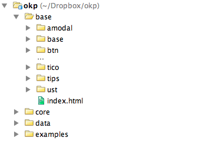

Basic engine documentation
This page (and whole site) is powered by Source engine, feel free to inspect source code.
Project is in active development state and until we will update base technology stack integration (Node.js, mongoDB, grunt, bower) it will stay in Beta.
Fast start
To start, all you need is to follow these simple steps:
git clone https://github.com/sourcejs/Source.git
cd Source
npm install
grunt init
Be sure that you have Git and Node.js installed, before Source setup. Read more about Grunt tasks workflow with Source here.
Near the Source engine folder Grunt will create a Specs directory, that must be placed to http server to start creating own Spec (documentation) pages.
For some modules and plugins (search, globalNav, bubble) you wil need PHP 5.3 on your server, and set proper chmod rights on /data folder. With nearest updates PHP will be replaced with Node.js and all generated will be stored in database.
For fast web server setup use MAMP (OSx), and set created Specs folder as server root directory.
Starting template
Starting template for Spec page is located here, just copy it to new folder and page is ready.
Read more about Spec pages here.File structure
Main engine architecture is based on modules and plugins, we have core modules in /core/js/modules and plugins (that are turned off by default) in /plugins folder.
Working with engine in basic way, without writing new core functionality you won't be needed to modify /core folder. To override header/footer templates and change options use /user folder
Folder /data is for user content like your images or your project styles etc.
Plugins
Some plugins for Source engine are included in core repository right now, but turned off by default, to turn them on change settings in /user/js/options.js file:
pluginsEnabled : {
//Plugins enabling
//bubble: true,
//debugmode: true
}
To activate plugins or modules all you need is to change object (named as a plugin/module name) parameter to "true".
Search and navigation modules
Search, and GlobalNav modules are based on data from JSON file, that is generated with PHP script/plugin /plugins/file_tree_generator/core/file_tree_generator.php. To run this script, you must set proper chmod rights to /data folder (isn't set on sourcejs.com for security reasons).
To run this script automatically, configure cron task for it or run in by direct url from browser.
With nearest updates PHP will be replaced with Node.js and all generated will be stored in database.
Organasing documentation pages
Source documentation is based on engine functionality itself. You can just copy /docs folder structure and start developing your own frontend documentations.
Real life example of documentation folder at Odnoklassniki project:
Contact us
Leave your questions and feedback at Issues sections on Github.